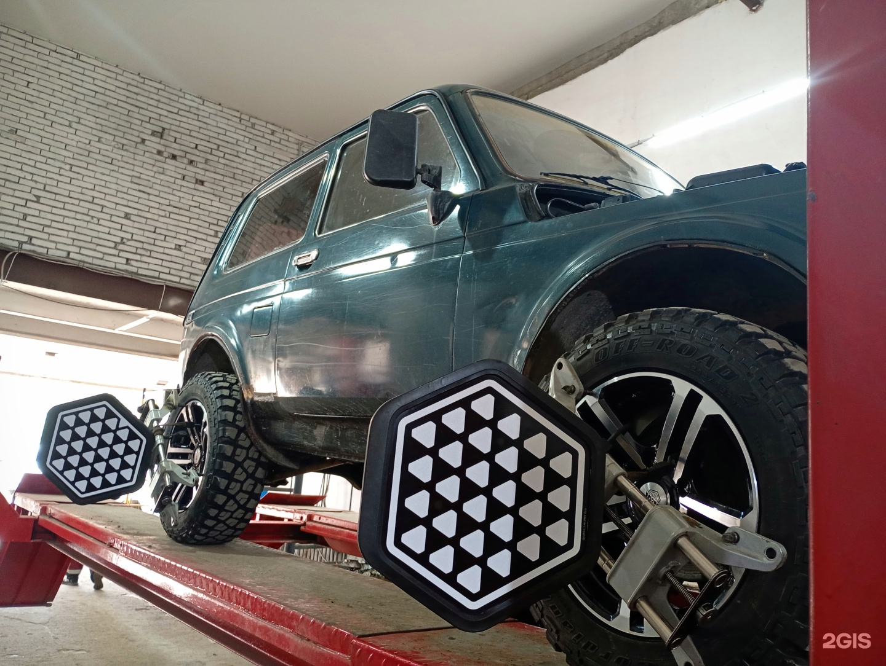
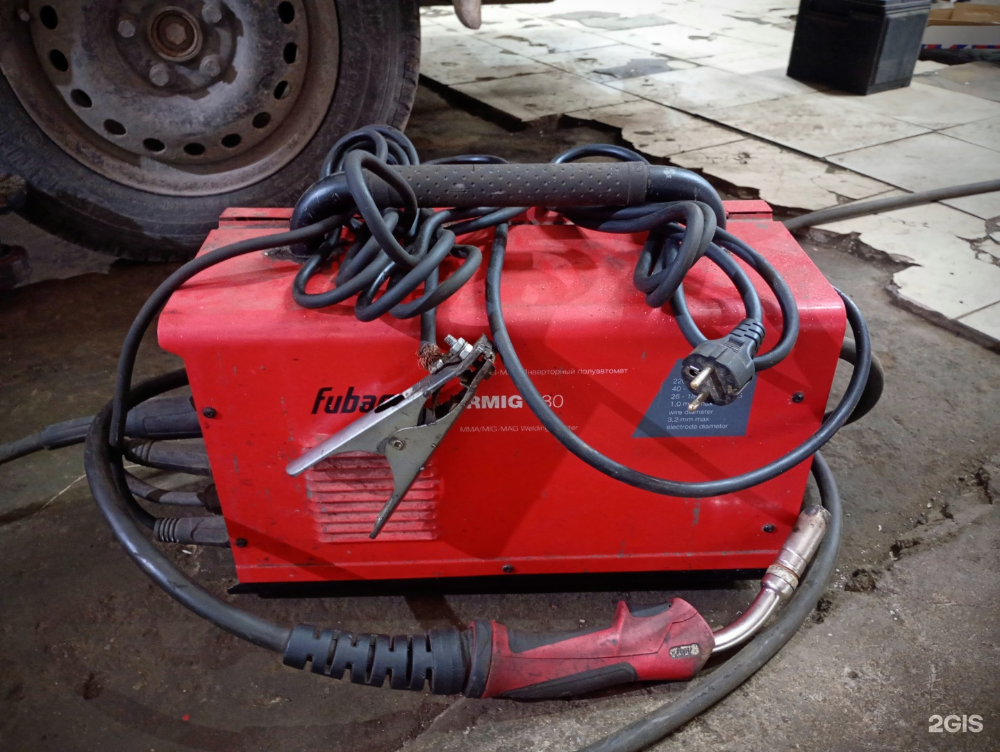
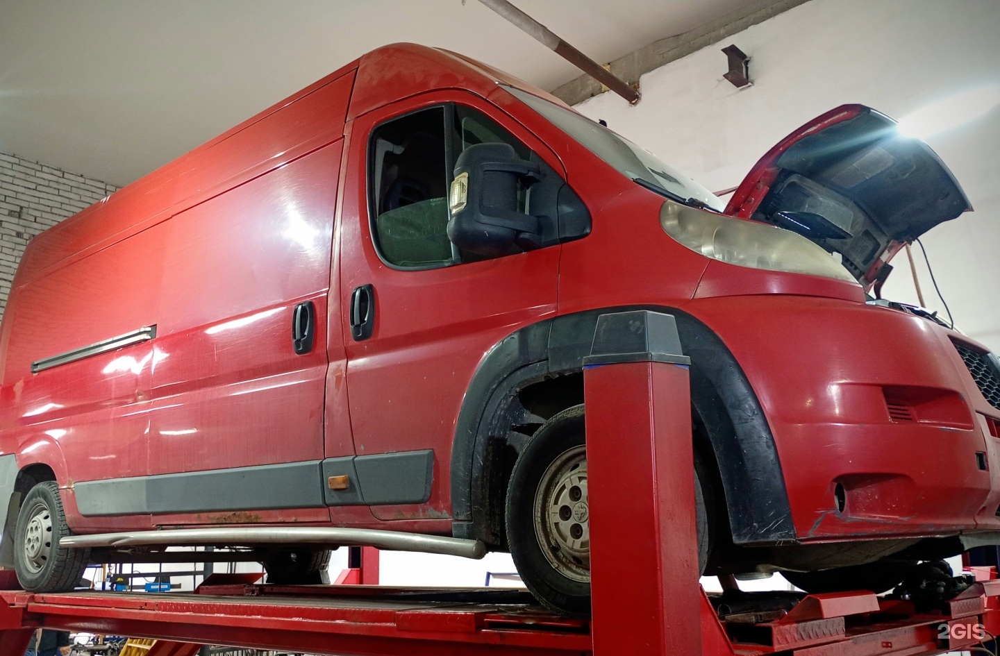
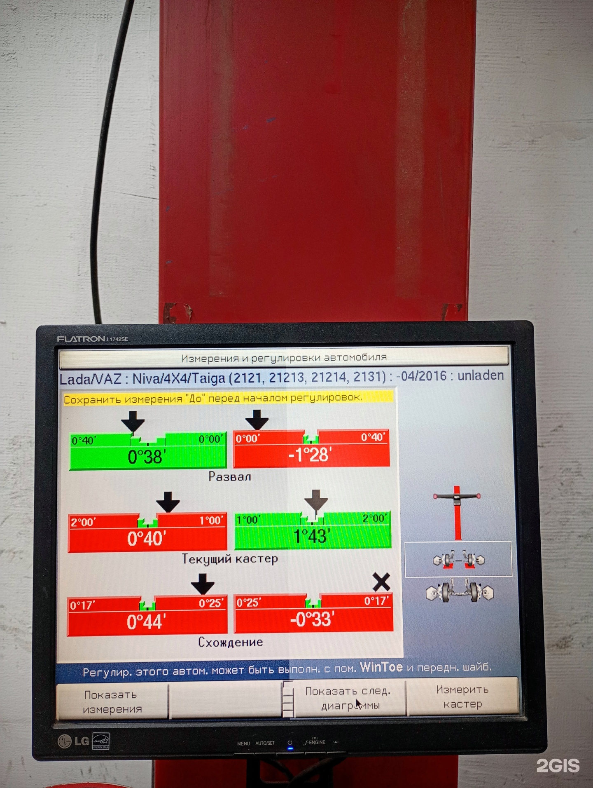

АвтосервисЗапсковье
На пять с плюсом
Кузов, двигатель и ходовая — ремонт автомобиля
Кузовной ремонт, шиномонтаж и замена масла. Установку автозвука и шумоизоляцию также можно обсудить с сервисом.

Часы работы
- Пн–Сб 09:00–19:00
Рейтинг
4.5 из 5 · 11 оценок в 2ГИСДемо-концепт · текущий прайс ещё не подтверждён
Что ремонтируем
Кузовной ремонт
Ремонт ходовой части автомобиля
Замена масла
Ремонт двигателей
Шиномонтаж
Установка автозвука
Шумоизоляция
Обсудите нужный ремонт по телефону
ПозвонитьЧто отмечают клиенты
В отзыве благодарят сервис за выполненные работы и помощь с вопросами по автомобилю.
Один из посетителей доволен повторными обращениями, в том числе на развал-схождение.
В другом отзыве отмечают понятные объяснения, ответы сотрудников на вопросы и оперативность ремонта.
Пересказ мнений посетителей без имён авторов. Все отзывы в 2ГИС
Услуги и цены
Сервис на фотографиях


